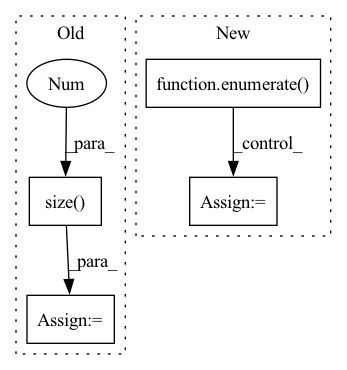

Pattern ID :11181
Before Change
if args.model != "Transformer":
hidden = model.init_hidden(args.batch_size)
length = len(range(0, train_data.size(0 ) - 1, args.bptt))
with tqdm(total=length,
desc="Epoch {:2d}/{:2d}".format(epoch + 1, args.epochs),After Change
with tqdm(total=len(train_loader),
desc="Epoch {:2d}/{:2d}".format(epoch + 1, args.epochs),
disable=not args.verbose) as t:
for batch_idx, (data, target) in enumerate( train_loader) :
if args.cuda:
data, target = data.cuda(), target.cuda()
data, target = torch.squeeze(data), torch.squeeze(target)
// Starting each batch, we detach the hidden state from how it was
// previously produced. If we didn"t, the model would try backpropagating
// all the way to start of the dataset.
model.zero_grad()
if args.model == "Transformer":
output = model(data)
output = output.view(-1, args.ntokens)
else:
hidden = repackage_hidden(hidden)
output, hidden = model(data, hidden)
loss = criterion(output, target)
loss.backward()
train_loss.update(loss)In pattern: SUPERPATTERN
Frequency: 3
Non-data size: 4
Instances Fragment ID: 38232918
Project Name: gpauloski/kfac_pytorch
Commit Name: 22a07a821dbaeffdcc00bb4614c8967b44803eeb
Time: 2020-04-09
Author: gpauloski@yahoo.com
File Name: examples/pytorch_wikitext_rnn.py
M Class Name: AnonimousClass
N Class Name: AnonimousClass
M Method Name: train(10)
N Method Name: train(9)
M Parent Class:
N Parent Class:
M File Name: examples/pytorch_wikitext_rnn.py
N File Name: examples/pytorch_wikitext_rnn.py
M Start Line: 264
M End Line: 309
N Start Line: 246
N End Line: 279
Before Change
if args.model != "Transformer":
hidden = model.init_hidden(args.batch_size)
length = len(range(0, data_source.size(0 ) - 1, args.bptt))
verbose = args.verbose if epoch is not None else False
with tqdm(total=length,After Change
desc=" ",
disable=not verbose) as t:
with torch.no_grad():
for i, (data, target) in enumerate( data_loader) :
if args.cuda:
data, target = data.cuda(), target.cuda()
data, target = torch.squeeze(data), torch.squeeze(target)
if args.model == "Transformer":
output = model(data)
output = output.view(-1, ntokens)
else:
output, hidden = model(data, hidden)
hidden = repackage_hidden(hidden)
loss = criterion(output, target)
val_loss.update(loss)
t.update(1)
Fragment ID: 38232913
Project Name: gpauloski/kfac_pytorch
Commit Name: 22a07a821dbaeffdcc00bb4614c8967b44803eeb
Time: 2020-04-09
Author: gpauloski@yahoo.com
File Name: examples/pytorch_wikitext_rnn.py
M Class Name: AnonimousClass
N Class Name: AnonimousClass
M Method Name: evaluate(5)
N Method Name: evaluate(5)
M Parent Class:
N Parent Class:
M File Name: examples/pytorch_wikitext_rnn.py
N File Name: examples/pytorch_wikitext_rnn.py
M Start Line: 226
M End Line: 258
N Start Line: 209
N End Line: 242
Before Change
seasonal_forecast = [torch.zeros((target.size(0), timesteps), dtype=torch.float32, device=self.device)]
backcast = target // initialize backcast
forecast = torch.zeros(
(target.size(0 ) , self.hparams.prediction_length), dtype=torch.float32, device=self.device
)
for block in self.net_blocks:
// evaluate blockAfter Change
seasonal_forecast = [torch.zeros((target.size(0), timesteps), dtype=torch.float32, device=self.device)]
backcast = target // initialize backcast
for i, block in enumerate( self.net_blocks) :
// evaluate block
backcast_block, forecast_block = block(backcast)
// add for interpretation
full = torch.cat([backcast_block.detach(), forecast_block.detach()], dim=1)
if isinstance(block, NBEATSTrendBlock):
trend_forecast.append(full)
elif isinstance(block, NBEATSSeasonalBlock):
seasonal_forecast.append(full)
else:
generic_forecast.append(full)
// update backcast and forecast
backcast -= backcast_block
if i == 0:
forecast = forecast_block
else:
forecast += forecast_block
Fragment ID: 38232912
Project Name: jdb78/pytorch-forecasting
Commit Name: 94dbed3dafdf3f4c76c56e2326f047a0de92a360
Time: 2020-07-14
Author: beitner.jan@bcg.com
File Name: pytorch_forecasting/models/nbeats/__init__.py
M Class Name: NBeats
N Class Name: NBeats
M Method Name: forward(2)
N Method Name: forward(2)
M Parent Class: BaseModel
N Parent Class: BaseModel
M File Name: pytorch_forecasting/models/nbeats/__init__.py
N File Name: pytorch_forecasting/models/nbeats/__init__.py
M Start Line: 95
M End Line: 120
N Start Line: 107
N End Line: 127